ビッグドリーム THE GOLDEN PUSHER
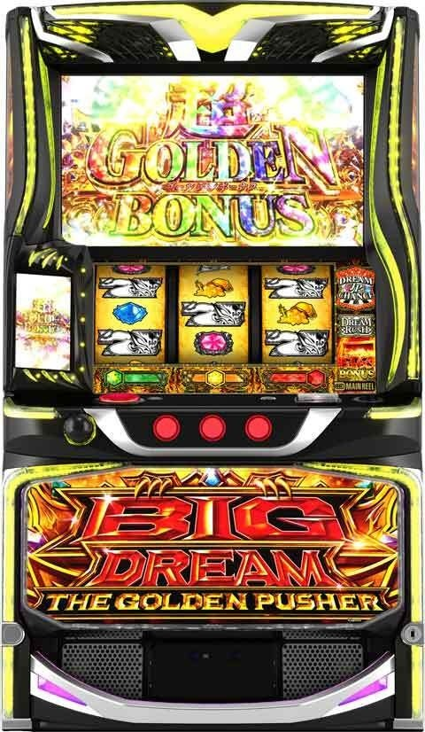
【天井情報】
通常時を最大1499G消化でATに当選。
設定変更時、上位AT後は最大999Gに短縮。
ボールが落下するたびにボール天井のポイント獲得を抽選。
ポイントが規定数に到達すると上位ATへのプレミアムCZ「ドリームジャックポットチャンス」突入 or 次回ATの1個目の宝箱が「金箱」となる。
【リセット判別】
不明
【有利区間について】
エンディング等で有利区間をリセットした場合は、通常AT後は「神化の剣」を、上位AT後は「覚醒ゴールデンチャレンジ」を経由して上位ATに突入（見た目が異なるが内部的にやっている事は同じ）。
狙い目
【リセット狙い】
積極派 200Gから
慎重派 270Gから
【ゲーム数天井狙い】
※AT間ハマりG数はサブ液晶に表示。CZ間は天井無し。
※AT性能の下がる区間があるためボーダー調整要因の項目も確認。
下位AT後
積極派 300Gから
慎重派 400Gから
上位AT後
積極派 300Gから
慎重派 380Gから
※上位AT後は天井短縮あるためボーダー調整要因は意識しなくて良さそう。
【ゲーム数天井狙い時のボーダー調整要因】
※マイナス条件が重なった場合は慎重に行くなら加算、積極的に行くなら片方だけ。
※複数のプラス条件が重なった場合でも200Gからくらいにした方が良さそう。どの条件でも0Gからと200Gからでは機械割が5％前後変わる。
※条件がどれだけ悪くても650G以上ハマっていれば打てそう（機械割106-108％くらい？）。慎重派でも700Gあれば不問で打てそう。
※上位AT後以降はボーダー調整要因がどうなるか不明。
朝一からの通常時累積ゲーム数（前回AT終了時点）
| 通常時累積ゲーム数1000G未満（朝1回目以外） | 250Gボーダー上げる |
| 通常時累積ゲーム数1000Gから1999G（朝1回目以外） | ボーダーそのまま |
| 通常時累積ゲーム数2000から3999G | 150Gボーダー下げる |
| 通常時累積ゲーム数4000から4499G | 50Gボーダー下げる |
| 通常時累積ゲーム数4500G以上 | 350Gボーダー上げる |
※ボール天井の影響で朝から1000G以下はAT性能が下がる傾向。
通常時累積ゲーム数でのボーダー調整の注意点
ボーダー下げれる通常時累積ゲーム数でも以下の注意点を意識する。既にボール天井が発動していたら辛くなると思われる。
※上位ATまたは直撃の履歴がある場合は通常時累積ゲーム数のボーダーを下げれない。特に直撃履歴はボール天井が発動した可能性がある。
※また、ボール天井の恩恵としてAT当選時の金箱（上乗せ300枚）が選択される場合もあるため、初期枚数300枚+金箱300枚の合計600枚、600-700枚以下のATが続いている方がボール天井に到達していない可能性が上がりそう。
※ポイントが規定数に到達すると上位ATへのプレミアムCZ「ドリームジャックポットチャンス」突入 or 次回ATの1個目の宝箱の中身がプレミアムCZとなる。
同一有利区間差枚（前回AT終了時点）
| +0枚以上 | 下位AT後かつ差枚プラスは650G以上からが良さそう。 |
| -1枚から-1000枚 | 100Gボーダー上げる |
| -1001枚以下から-2000枚 | 100Gボーダー下げる |
| -2001枚以下から-4000枚 | 150Gボーダー下げる |
| -4001枚以下 | ボーダーそのまま |
※差枚凹んでいる方がAT性能上がる傾向。
※差枚-4000枚以下になると機械割が下がる傾向。
前回当選ゲーム数
| 前回1500G以上（天井） | 150Gボーダー下げる |
※天井未到達でも前回大きくハマった方が機械割高い傾向だが、大きくハマる＝差枚マイナスの影響がありそうなので天井到達以外はボーダー調整要因に含めない。
※天井後のボーダー調整と有利区間差枚のボーダー調整は併用しない。天井後は差枚マイナスの影響を受けている可能性があるため。
有利区間切断後、ボール天井発動後（直撃履歴）と想定される所を起点とした通常時累積ゲーム数（前回AT終了時点）
| 通常時累積ゲーム数1500から3999G | 150Gボーダー下げる |
※設定変更後に比べ、直撃履歴発生の分布が広がっている。ボーダーを下げるにしても250Gからくらいが良さそう。
【ボール天井狙い（CZ、AT終了後のボイス）】
カウントダウン、究極ドリーム、1万ドリームは不問でボール天井確認まで。
インフィニットドリームの押し引きは、通常時累積ゲーム数1500-4000Gなら確認しに行く感じ？またはマーベラス、セブンドリーム、ゴールデンドリームの他の強めの示唆も併せて出てくるようなら？
ボイス（女性）
| ワオ、グッド、フォーカス | デフォルト |
| マーベラス | 単体では弱そう？インフィニットドリーム以上のボイス出たときに信頼度アップ的な？ |
| カウントダウンのボイス | ボイスを確認しつつボール天井まで。 |
ボイス（男性）
| テラドリーム以下 | デフォルト扱いで良さそう |
| セブンドリーム | 扱い不明 |
| ゴールデンドリーム | ボール天井まで50個以内示唆だが単体なら一旦リリース？ |
| インフィニティドリーム | ボール天井まで30個以内示唆。攻めるなら30個ボール落下まで？ |
| 究極ドリーム | 朝イチAT当選までに出現でボール天井発動まで。それ以外でも20個ボール落下まで？ |
| １万ドリーム | 朝イチAT当選までに出現でボール天井発動まで。それ以外でも10個ボール落下まで？ |
※インフィニットが来てから50回以上ボール落下を消化してもボール天井発動無しの報告あり。
※ボール天井示唆は大事なため、終了タイミングで必ずPUSHボタンを押す。
※ボイスはCZ失敗時とAT終了後に、「レバーオンからリールが全て停止するまでの間」にPUSHボタンを押せば確認出来る。
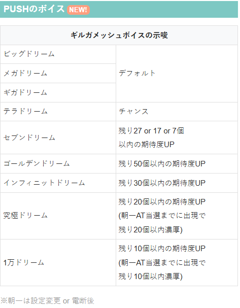
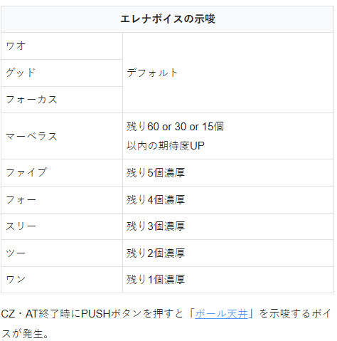
【示唆関連の押し引きについて】
ボールの色
金のボールは落下するまで。
赤は積極派は落下するまで。慎重派は手前にあるときは落下するまで。
液晶のボールの色は必ずチェック。赤なら落下で約80%が1stジャッジ突破、金なら落下で上位ATへのプレミアムCZ「ドリームジャックポットチャンス」濃厚となる。
AT終了画面
上位AT後に天井短縮濃厚示唆が出ると555G以下濃厚のためAT当選まで。
アイキャッチ
上位終了時の通常アイキャッチ
555G以下の期待大。77Gの引き戻しまで見ることを考えるとギリギリ打った方が良さそう？
無難に行くならボーダーを100G下げる程度？
上位AT終了時は赤アイキャッチがデフォルト。
上位AT終了時以外での赤アイキャッチ
天井999G以下のチャンス。CZ後なら大チャンス。
CZ後なら100-200Gボーダー下げる？それ以外は50-100G程度？
キリン柄
ほぼ見かける事はないが天井333G以下濃厚+ボールポイントMAX濃厚。必ずAT当選まで。
ドリームメーター（サブ液晶のメーターの色）
紫だと上位突入時に3333枚スタート？単体で狙うのは厳しそう？100Gくらいはボーダー下げれそう。
【有利区間関連狙い】
不明
やめ時
通常のAT終了後は特に続行する要素が無ければ1G回してやめ
上位AT後は引き戻し区間をフォロー（77G）
※77Gを過ぎても紫のもやもやは消えないが、引き戻し区間は終わっている（CZ当選まで消えない仕様？）。心配な場合はもやもや消える（CZ当選）まで？
下位ATで一撃1500枚以上の場合引き戻し80g付近まで続行。引き戻しは直撃またはcz当選のみです。
その他
履歴
上位ATは連荘の途中にART8-10G前後の履歴が出てくる。（下記データ21:13の信号）
ART14-77Gの履歴は引き戻しと思われる。
RBはCZの信号（ジャッジメントまで行った時だけ）となるためAT間天井はリセットされない。
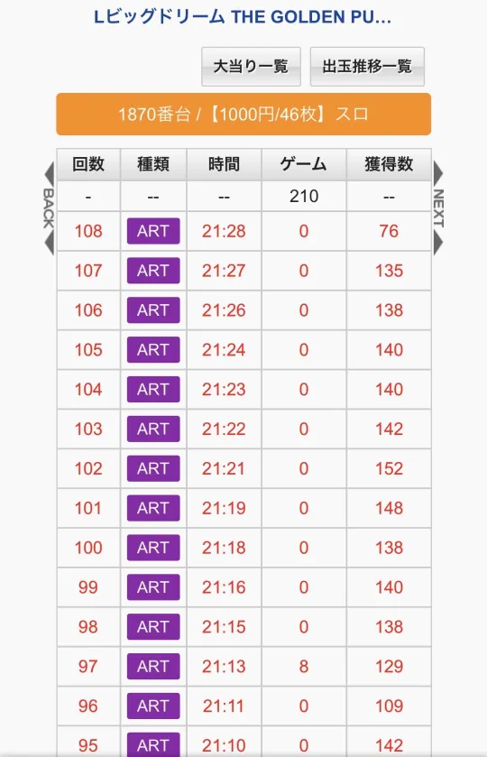
ボール天井
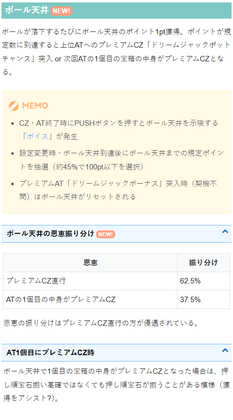
アイキャッチ
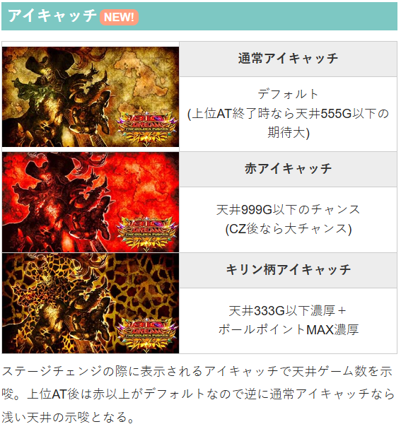
AT終了画面
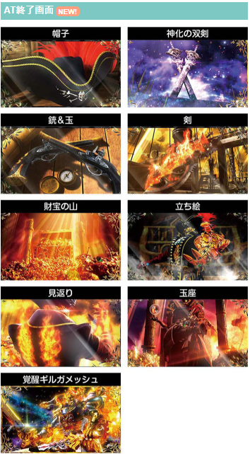
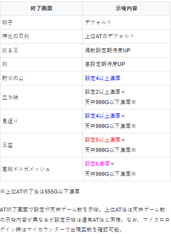
内部状態・ステージ
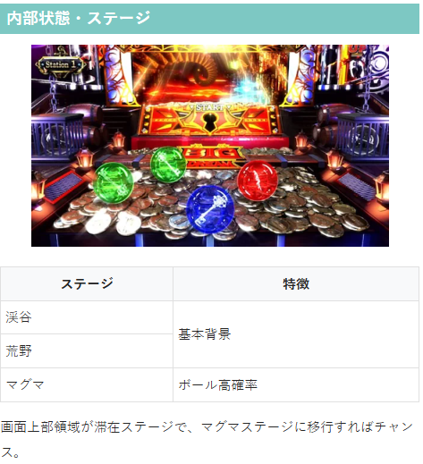
ボールの色
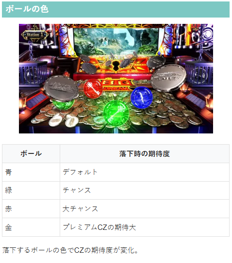
保留の種類、ステーションナンバー、ドリームメーター
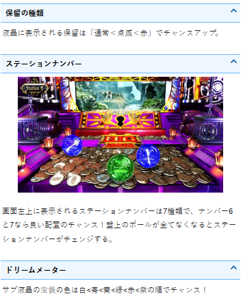
天井選択率
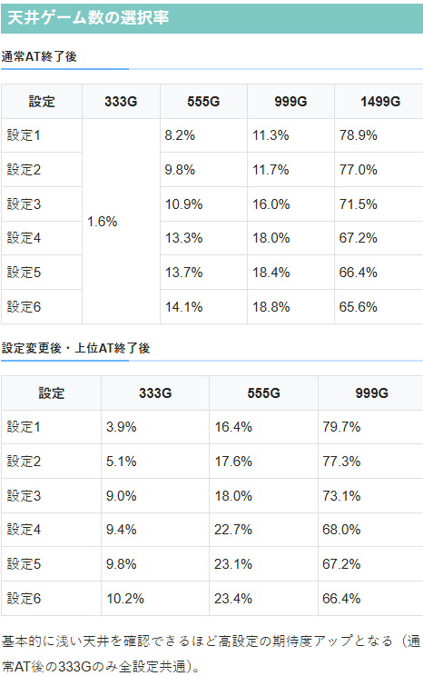
PUSHのボイス
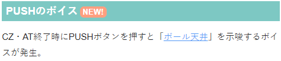
参考元
かめとうさぎのパチスロブログ
基本情報
- メーカー: サミー
- 機械割: 97.4% 〜 111.3%
- 導入開始日: 2026年05月11日（月）
- ゲーム性概要: –


打ち方
打ち方・小役
打ち方（小役狙い）
「順押しフリー打ちでOK」 順押しで消化さえすれば、目押しの必要はナシ。ハサミ打ちもNGなので必ず順押しで消化しよう。
「小役の停止例」
変則押しはNG
押し順ナビなし時は順押しでの消化を推奨。ハサミ打ちもNGだ。
解析情報通常時
小役関連
小役確率
| 役 | 確率 |
|---|---|
| 弱チャンス目合算 | 1/83.9 |
| 中チャンス目合算 | 1/179.6 |
| 強チャンス目合算 | 1/1489.5 |
| 順押し白7揃い | 1/16384.0 |
順押し白7揃いはプレミアムCZ直行の強力なフラグ。通常時に成立した場合は基本的に次ゲームからプレミアムCZへ、AT中の場合は基本的にストックされ、AT終了後にプレミアムCZへ移行する。
プッシャー関連
通常時のゲーム性
ゲームセンターでおなじみのプッシャー機をモチーフにしていて、レバーONでプッシャーを押し出し、リールを止めるごとに液晶内にメダルが発射される。液晶内のボールが落下すればジャッジへ突入。落ちたボールの色で期待度が変化する。
ボール色ごとの期待度
| 色 | 期待度 |
|---|---|
| 青 | デフォルト |
| 緑 | チャンス |
| 赤 | 大チャンス |
| 金 | プレミアムCZ濃厚 |
「スタートにメダルが入ると図柄が変動」 液晶中央のスタート部分にメダルが入ると、保留が付いて液晶図柄が回転。揃った液晶図柄に応じた報酬を獲得できる。 保留は通常＜点滅＜赤の順にチャンスだ。
液晶図柄揃いで獲得できる報酬（一部）
液晶メダル獲得
メダルの発射量増加
ボール追加
ボールゲット高確率
ジャッジメント（CZ）
AT
ボールの初期個数振り分け
ステーションチェンジが発生したタイミングで、ボールの初期個数を抽選する。
CZ
1stジャッジ＆2ndジャッジ
【1stジャッジ】 液晶上でボールが落下すると1stジャッジに突入。 導入1Gとルーレット1Gの2G構成で、赤い穴にボールが入れば成功となり2ndジャッジへ移行する。
1stジャッジ性能
| 突入契機 | ボール落下後 |
|---|---|
| 突入確率 | 約1/31 |
| 継続ゲーム数 | 2G |
| 消化中の抽選 | レア役成立で成功濃厚 |
| 成功期待度 | 約20% |
| 成功後 | 2ndジャッジへ |
| 備考① | 赤いボール落下後は約80%で成功 |
| 備考② | プレミアムCZへの直行パターンあり |
「ハズレ穴が封鎖されるとチャンス」
「赤い穴に入ると成功」
【2ndジャッジ】 1stジャッジ突破後は2ndジャッジへ。 2G/セットのジャッジ3回以内に、扉を突破できればジャッジメント（CZ）へ突入する。
2ndジャッジ性能
| 突入契機 | 1stジャッジ突破後 |
|---|---|
| 継続ゲーム数 | 導入1G＋2G×3セット（最大7G） |
| 消化中の抽選 | 扉を突破でCZに当選、リプレイ成立でチャンス |
| 成功期待度 | 約37% |
リプレイ時の突破期待度
| セット | 期待度 |
|---|---|
| 1・2セット目 | 2G目のリプレイは約37%、 1＆2G目で両方リプレイを引くと突破濃厚 |
| 3セット目 | 2G目のリプレイは突破濃厚 |
「1G目：ボール周回」
「2G目：扉の突破あおり」 導光板や赤背景など、チャンスアップが発生すれば期待度アップとなる。
「突破確定後のレア役」 1stジャッジ・2ndジャッジ共通で、内部的に突破確定後のレア役では次の段階の成功抽選がおこなわれる。
ジャッジメント概要
CZ開始時に成功抽選がおこなわれ、漏れた場合は消化中の成立役に応じて成功への書き換えを抽選。 消化中のレア役は成功濃厚、最終ゲームで約1/5の7揃いフラグが成立した場合も成功濃厚となる。
ジャッジメント性能
| 突入契機 | ボール落下時の一部、2ndジャッジ突破後、 引き戻しステージ中の直撃抽選 |
|---|---|
| 継続ゲーム数 | 6G |
| 消化中の抽選 | CZ開始時に成功抽選、 漏れた場合は消化中の小役で成功書き換え抽選 |
| 成功期待度 | 約47% |
| 備考① | レア役成立で成功濃厚 |
| 備考② | 最終ゲームで 約1/5の7揃いフラグを引いた場合も成功濃厚 |
AT当選率
| 役 | 当選率 |
|---|---|
| リプレイ | 10%以上 |
| レア役 | 成功濃厚 |
ジャッジメント確率
| 設定 | 確率 |
|---|---|
| 1 | 1/337.7 |
| 2 | 1/333.3 |
| 3 | 1/326.6 |
| 4 | 1/316.4 |
| 5 | 1/311.4 |
| 6 | 1/303.4 |
「赤系統の演出は期待大」 成功期待度80%オーバー!?
ボール天井（穢れ要素）
ボール天井解説
ボール天井
ボールを落とすたびにカウントが進む可能性あり
MAXに到達するとプレミアムCZ直行or次回ATの1つ目の宝箱が金
ボールを落とすたびにカウントが進む可能性があり、天井に到達すると恩恵を獲得できる。
フリーズ
ロングフリーズ性能
| 発生契機 | 調査中 |
|---|---|
| 恩恵 | 成功濃厚のプレミアムCZへ突入 |
ロングフリーズ動画
成功濃厚のドリームJPチャンス（プレミアムCZ）へ突入。
プレミアムCZ→プレミアムATと消化し、終了後は上位ATへ突入する。
解析情報ボーナス時
ドリームラッシュ
ドリームラッシュ概要
ATの初期枚数決定ゾーン。3G以上継続し、1Gあたりの上乗せ枚数は100枚以上なので、最低でも300枚からATが始まる。 白7ナビ時に白7が揃った場合は200枚以上が上乗せ。上乗せ3回目以降は全リール停止後に継続抽選がおこなわれ、当選すれば次ゲームで必ず上乗せが発生。漏れた場合は次ゲームの成立役を参照して継続の当否が抽選される。
ドリームラッシュ性能
| 突入契機 | AT開始時 |
|---|---|
| 継続ゲーム数 | 3G以上 |
| 消化中の抽選 | 毎ゲーム100枚以上を上乗せ、 レア役や白7揃いは200枚以上 |
「白7ナビ」 目押しは不要なので、押し順ナビ通りに押せばOK。白7が揃えば200枚以上を上乗せ！
「上乗せパターンで期待度が変化」
ゴールデンボーナス（AT）
AT概要
純増約8.2枚/G、初期枚数300枚以上の差枚数管理型AT。プッシャーで宝箱を落とすと、「トレジャージャッジ」が発生して上乗せやプレミアムCZの獲得を抽選する。 押し順白7揃いから発生する「ギルガメッシュチャンス」は上乗せorプレミアムCZ獲得濃厚だ。
AT性能
| 突入契機 | ボール落下時の一部、CZ成功後、 引き戻しステージ中の直撃抽選 |
|---|---|
| 1Gあたりの純増 | 約8.2枚 |
| 初期枚数 | ドリームラッシュで決定（300枚以上） |
| 消化中の抽選 | お宝メーター加算、高確移行、 トレジャージャッジ、ギルガメッシュチャンス |
| 備考① | 押し順宝石の約50%で トレジャージャッジ当選 |
| 備考② | 4つ目・8つ目の宝箱は赤以上 |
「お宝メーター」 1枚ベル・3枚ベル・ハズレを引くと、サブ液晶のメーターにポイントを加算。MAXまで貯まると高確へ移行する。
「宝石高確」 押し順宝石の確率がアップ。
宝石高確性能
| 移行契機 | お宝メーターの一部、レア役での抽選 |
|---|---|
| 押し順宝石確率 | 1/14.5 |
「7揃い高確」 押し順白7揃い確率がアップ。宝石高確と複合することもある。 いずれの高確も、お宝メーター契機だけではなく、レア役契機での移行もあり。
7揃い高確性能
| 移行契機 | お宝メーターの一部・強レア役成立後 |
|---|---|
| 継続ゲーム数 | 5G |
| 白7揃い確率 | 1/17.6 |
| 白7揃い時 | ギルガメッシュチャンスへ |
| 備考 | 白7がダブルで揃えばプレミアムCZ濃厚 |
トレジャージャッジ
液晶内の宝箱を落下させるとトレジャージャッジが発生。落ちた宝箱の種類で期待度が変化する。
宝箱色ごとの報酬
| 色 | 報酬 |
|---|---|
| 銀 | デフォルト（ハズレの可能性あり） |
| 赤 | ＋100枚or＋300枚orプレミアムCZ |
| 金 | ＋300枚以上orプレミアムCZ |
すべての宝箱をトータルすると、トレジャージャッジの約10%でプレミアムCZを獲得できる。
ギルガメッシュチャンス
押し順白7揃いから発生する上乗せ以上濃厚演出。 タイトル色変化やカットインなど、チャンスパターン発生で大量上乗せやプレミアムCZに期待できるぞ。
ギルガメッシュチャンスの報酬割合
| 報酬 | 報酬 |
|---|---|
| 上乗せ | 75.0% |
| プレミアムCZ | 25.0% |
ビッグドリームラッシュ
ビッグドリームラッシュ概要
上位ATも初期枚数決定ゾーンからスタート。 最低3G継続、毎ゲーム100枚以上を上乗せするという性能はドリームラッシュと共通だ。
ビッグドリームラッシュ性能
| 突入契機 | 上位AT開始時 |
|---|---|
| 継続ゲーム数 | 3G以上 |
| 消化中の抽選 | 毎ゲーム100枚以上を上乗せ、 レア役や白7揃いは200枚以上 |
| 備考 | ドリームラッシュよりも継続率が大幅に優遇 |
基本的なゲーム性はドリームラッシュと同じだが、上乗せ3回発生後の継続抽選が大幅に優遇されていて、1000枚以上の上乗せにも期待できる。
超ゴールデンボーナス（上位AT）
上位AT概要
宝箱を落として「トレジャージャッジ」、押し順白7揃いで「ギルガメッシュチャンス」が発生する基本的なゲーム性は通常のATと同じだが、上乗せ性能が大幅にアップしている。
上位AT性能
| 突入契機 | エンディング後・プレミアムAT終了後 |
|---|---|
| 1Gあたりの純増 | 約8.2枚 |
| 初期枚数 | ビッグドリームラッシュで決定（300枚以上） |
| 消化中の抽選 | お宝メーター加算、高確移行、 トレジャージャッジ、ギルガメッシュチャンス |
| 備考① | 押し順宝石の約50%で トレジャージャッジ当選 |
| 備考② | 出現する宝箱は赤or金の2種類のみ |
引き戻しゾーン
ゴールデンチャレンジ
AT終了後は5Gの引き戻しゾーンへ移行。消化中は毎ゲーム引き戻しが抽選されていて、レア役成立時の一部や2択正解でATへ復帰する。
ゴールデンチャレンジ性能
| 突入契機 | AT終了後 |
|---|---|
| 継続ゲーム数 | 5G |
| 消化中の抽選 | レア役成立時の一部、 2択正解でATを引き戻し |
覚醒ゴールデンチャレンジ
上位AT後の引き戻しゾーンは引き戻し成功で上位ATへ復帰。 継続ゲーム数は5Gで、ギルガメッシュのオーラの色が変化するほど期待度アップだ。
覚醒ゴールデンチャレンジ性能
| 突入契機 | 上位AT終了後 |
|---|---|
| 継続ゲーム数 | 5G |
| 消化中の抽選 | 突入時に引き戻し抽選、 漏れた場合は消化中にレア役を引けば引き戻し濃厚 |
「オーラの色」 赤オーラは大チャンス。最終ゲームで引き戻しの当否を告知する。
「上位ATのエンディング後も突入」 通常のATでエンディングに到達した場合は神化の剣を経由して上位ATへ移行するが、上位AT中にエンディングに到達した場合は成功濃厚の覚醒ゴールデンチャレンジを経由して上位ATへ移行する（虹オーラからスタート）。
ドリームJPチャンス（プレミアムCZ）
プレミアムCZ概要
さまざまな契機から突入する、プレミアムATをかけたチャンスゾーン。成功でプレミアムATへ、失敗してもドリームラッシュへ突入する。 1回のATで2回突入した場合は成功＝プレミアムAT濃厚だ。
プレミアムCZの突入契機
通常時のボール落下時の一部（金ボール落下は期待大）
順押し白7揃い後
トレジャージャッジの報酬の一部
ギルガメッシュチャンスの報酬の一部
ロングフリーズ後
プレミアムCZ性能
| 継続ゲーム数 | 1G |
|---|---|
| 成功期待度 | 約30% |
| 突入確率 | 約1/3456 |
| 備考① | レア役を引けば成功濃厚 |
| 備考② | 一度のATでプレミアムCZに2回当選すれば成功濃厚 （1回目は失敗あり→2回目は必ず成功） |
通常時にプレミアムCZに当選した場合、このプレミアムCZを1回目とカウント。AT中にプレミアムCZに当選すれば2回目なので成功濃厚になる。
「ルーレットに注目」 虹の穴に玉が落ちれば成功となりプレミアムATへ。 レベルアップして虹の穴が増える・ギルガメッシュが覗き込むなど、多彩なチャンスアップが存在する。
ドリームJPボーナス（プレミアムAT）
プレミアムAT概要
突入契機はプレミアムCZ成功のみ。初期枚数は1111枚or2222枚or3333枚のいずれかで、消化中の上乗せもすべて1000枚以上となっている。 終了後は必ず上位ATへ移行する（神化の剣を経由）。
プレミアムAT性能
| 当選契機 | プレミアムCZ成功後 |
|---|---|
| 初期枚数 | 1111枚or2222枚or3333枚 |
| 1Gあたりの純増 | 約8.2枚 |
| 消化中の抽選 | 枚数上乗せ抽選、 消化中の上乗せはすべて1000枚以上 |
| 終了後 | 上位ATへ |
「ルーレットで初期枚数を決定」
神化の剣
神化の剣概要
エンディング後・プレミアムAT後に突入。上位ATへの待機区間となっていて、一定ゲーム数を消化すると上位ATへ移行する。
神化の剣性能
| 移行契機 | エンディング後・プレミアムAT後 |
|---|---|
| 消化中の抽選 | 上位AT濃厚 |
引き戻しステージ
引き戻しステージ性能
| 突入契機 | （上位）AT終了後 |
|---|---|
| 継続ゲーム数 | 77G |
| 消化中の抽選 | AT後はCZを、上位AT後はATを高確率で抽選 |
AT・上位AT終了後（引き戻しゾーン終了後）77G間は引き戻しステージに滞在。AT後77G間はCZ高確、上位AT後77G間はATの高確になる。
「城」
「ギルガメッシュ」 AT後は城ステージに、上位AT後はギルガメッシュステージに滞在。液晶が紫のオーラに包まれるので、見た目でもわかりやすい。
ツラヌキ・有利区間
ツラヌキ条件と恩恵
| 項目 | 内容 |
|---|---|
| 条件 | 一定の枚数獲得後 |
| 恩恵 | 上位ATへ |
［エンディング］ 通常ATの場合は神化の剣を、上位ATの場合は覚醒ゴールデンチャレンジを経由して上位ATへ突入する。
演出情報
通常時
ステージの示唆
| ステージ | 示唆 |
|---|---|
| 渓谷 | デフォルト |
| 荒野 | デフォルト |
| マグマ | ボールの進行高確示唆 |
［渓谷］
［荒野］
［マグマ］
「ステーションナンバー」 ナンバーは1〜7の7種類で、液晶左上に表示されている。ステーション6と7はチャンスだ。
ドリームメーター
サブ液晶のメーターの色（中央下部の宝袋の色）は、白＜青＜黄＜緑＜赤＜紫の6種類。紫まで行けばチャンス!?
順押し7揃いに期待できる演出
| 演出 | 法則 |
|---|---|
| ゴールデンドリーム号 通過演出 | レバーON時の発生がデフォルト、 リール回転開始時や第1停止時なら7揃い濃厚 |
| ギルガメッシュの剣演出 | レバーON時の発生がデフォルト、 リール回転開始時や第1停止時なら7揃い濃厚 |
［ゴールデンドリーム号通過演出］
［ギルガメッシュの剣演出］
CZ＆AT終了後のPUSHボイス
CZ・AT終了時にPUSHボタンを押すと、ボイスでボール天井を示唆する。
AT関連
下パネル・ランプ系演出
［下パネル］ （ビッグ）ドリームラッシュ中に下パネルに変化が起こると＋200枚以上！
［（ビッグ）ドリームラッシュ中］下パネル系演出法則
一瞬点滅、（高速）点滅は＋200枚以上濃厚
一瞬点滅＜通常点滅＜高速点滅の順に大量上乗せのチャンス
［インパクトランプ］
［AT中の通常ステージ］ランプ系の演出法則
下パネル一瞬消灯、下パネル（高速）点滅、 インパクトランプ点灯は当該ゲームでの上乗せ濃厚
一瞬消灯≒＜インパクトランプ点灯＜通常点滅 ＜高速点滅≒インパクトランプ点灯＆下パネル点滅複合の順に 大量上乗せのチャンス
プレミアムAT中の上乗せ告知
プレミアムAT中に上乗せに当選した場合、告知ゲームの第3停止後にデカエイリやんBETが出現。 告知ゲームの第3停止ボタンを3秒以上長押しすると、必ずエイリやんBETがペカる＆エイリやんのボイスが発生する。
裏ボタン系
（ビッグ）ドリームラッシュの告知モード
| 手順（上乗せ2回目まで） | 全リール停止後にPUSHボタンを押す |
|---|---|
| 手順（上乗せ3回目以降） | 全リール停止後にPUSHボタンを 長押し |
| 効果 | 継続告知の発生割合を変更可能 |
全リール停止後にPUSHボタンを押すと、次ゲームも継続するかどうかを告知する裏ボタンが存在。 リール右のドリームラッシュランプの色で告知割合を表示する（デフォルトは約20%告知）。
ランプ色ごとの継続告知発生割合
| 色 | 割合 |
|---|---|
| 青 | 約20% |
| 緑 | 約50% |
| 赤 | 約80% |
ドリームJPチャンスの裏ボタン
MAX BETを押して（連打）ソーラン節が流れれば成功濃厚
ビッグドリームスマスロ (CZ→AT)
| 打ち始めG | AT初当り(G) | TY(枚) | 期待値(円) | 出玉率(%) | サンプル数 |
|---|---|---|---|---|---|
| 0 | 641 | 990 | -1,093 | 97.61 | 74,963 |
| 50 | 618 | 999 | -144 | 99.67 | 71,652 |
| 100 | 596 | 1,001 | +611 | 101.42 | 68,081 |
| 150 | 574 | 1,001 | +1,322 | 103.16 | 64,617 |
| 200 | 548 | 1,000 | +2,136 | 105.31 | 61,646 |
| 250 | 530 | 1,004 | +2,819 | 107.20 | 57,790 |
| 300 | 519 | 1,010 | +3,286 | 108.53 | 53,247 |
| 350 | 511 | 1,020 | +3,754 | 109.84 | 48,751 |
| 400 | 497 | 1,031 | +4,440 | 111.89 | 45,122 |
| 450 | 478 | 1,041 | +5,250 | 114.47 | 42,071 |
| 500 | 457 | 1,049 | +6,087 | 117.33 | 39,220 |
| 550 | 487 | 1,070 | +5,550 | 114.99 | 32,707 |
| 600 | 466 | 1,075 | +6,317 | 117.64 | 30,567 |
| 650 | 443 | 1,080 | +7,188 | 120.86 | 28,630 |
| 700 | 423 | 1,090 | +8,026 | 124.05 | 26,465 |
| 750 | 399 | 1,096 | +8,935 | 127.98 | 24,693 |
| 800 | 373 | 1,102 | +9,886 | 132.49 | 22,993 |
| 850 | 345 | 1,108 | +10,936 | 137.98 | 21,445 |
| 900 | 315 | 1,111 | +11,941 | 144.16 | 19,957 |
| 950 | 285 | 1,109 | +12,888 | 151.05 | 18,429 |
| 1000 | 376 | 1,167 | +11,088 | 135.64 | 11,534 |
| 1050 | 348 | 1,168 | +12,037 | 140.95 | 10,783 |
| 1100 | 320 | 1,171 | +13,003 | 146.83 | 9,982 |
| 1150 | 288 | 1,179 | +14,199 | 154.80 | 9,312 |
| 1200 | 255 | 1,183 | +15,373 | 164.22 | 8,654 |
| 1250 | 218 | 1,189 | +16,680 | 176.66 | 8,082 |
| 1300 | 178 | 1,189 | +17,964 | 192.64 | 7,544 |
| 1350 | 136 | 1,192 | +19,417 | 215.20 | 7,067 |
| 1400 | 90 | 1,188 | +20,813 | 247.54 | 6,593 |
| 1450 | 44 | 1,194 | +22,440 | 297.07 | 5,180 |